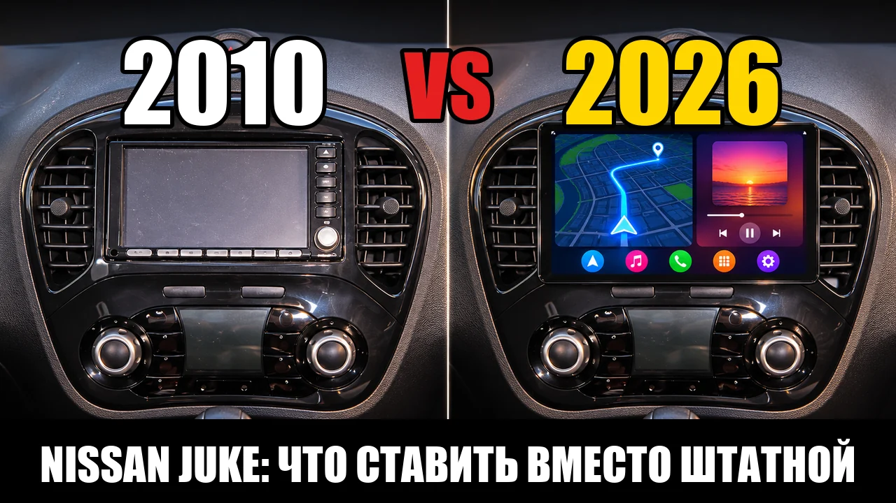
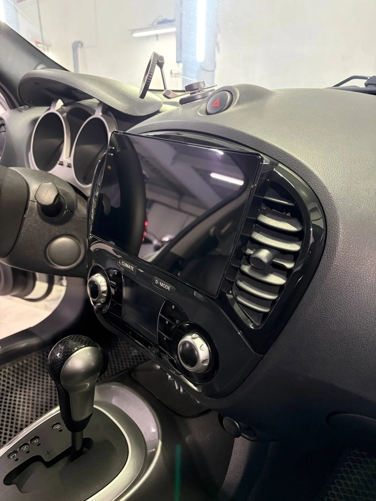

Лучшая магнитола для Ниссан Жук: что ставить вместо штатной в 2026 году

Nissan Juke первого поколения снаружи не стареет, а магнитола в нём осталась в 2010 году.
Держатель телефона на торпедо, провод через консоль, навигатор в руке на светофоре. В простых версиях – CD-магнитола и четыре динамика, в дорогих – экран 5,8 дюйма, который меньше экрана вашего телефона.

Коротко: что ставить на Juke
Лучшее решение по мультимедиа для Juke сегодня – Android-магнитола Teyes в штатную рамку. Экран встаёт на место старой магнитолы, блок климата с переключателем режимов остаётся под ним и работает как раньше.
В каталоге TEYES Sibir под Juke 2010–2014 стоят Teyes CC3L за 28 100 ₽ и CC4 Pro за 56 770 ₽ – цены на сайте 18.11.2026, при оплате наличными, установка отдельно, от 4 500 ₽. Мы ставили на Juke CC4 – она на фото выше.
Какой у вас Juke: Россия, Европа или Япония
Первый Juke выпускали с июня 2010 по 2019 год, в Японии продавали до июня 2020-го. Для Европы и России машины собирали в британском Сандерленде, для Японии – на заводе Оппама.
- Российский Juke. Официально продавался с апреля 2011 года, левый руль. Обновлённую версию привезли 20 ноября 2014 года: моторы 1.6 на 94 и 117 л. с. и турбо 1.6 DIG-T на 190 л. с.
- Рестайлинг 2014 года узнаете по фарам: в них появились светодиодные ходовые огни в форме буквы L, поменялись бамперы.
- Японский Juke. Правый руль, мотор 1.5 с передним приводом или турбо 1.6 в версиях 16GT и 16GT FOUR с полным приводом.
Что стояло в машине с завода
Российские машины до рестайлинга. В базе – магнитола 2DIN с CD, радио, входом AUX и четырьмя динамиками. С комплектации SE прибавлялись MP3, Bluetooth, USB и кнопки на руле. В SE+ и SV2 стояла система Nissan Connect: сенсорный экран 5,8 дюйма, навигация, шесть динамиков и камера заднего вида.
После рестайлинга. В SE – магнитола 2DIN с Bluetooth, USB и объёмным звуком Arkamys. В SE+ – камера и Nissan Connect нового поколения с навигацией и тем же экраном 5,8 дюйма.
Блок I-CON под магнитолой – климат и режимы Normal, Sport, Eco на одном пульте. Его ставили во все версии, кроме базовой.
Японские машины. I-CON – начиная с 15RX. С сентября 2014 года за доплату ставили круговой обзор Around View, с 2016-го – пакет под фирменную навигацию Nissan с кнопками на руле.
В списках оснащения тех лет нет ни CarPlay, ни Android Auto.
Что раздражает владельцев в 2026 году
CD-магнитола. Карт нет, приложений нет, а музыку вы давно слушаете с телефона.
Маленький экран. На 5,8 дюйма тяжело попасть пальцем в строку адреса на ходу.
Японский Juke. Меню и карты японские. Японский FM-диапазон до 2011 года заканчивался на 90 МГц, потом на 95 МГц, а наш эфир идёт до 108 МГц: часть новосибирских станций такой приёмник не ловит.
Парковка задом. Камеру завод ставил только в старшие версии.
Три пути и какой выбрать
Русифицировать штатный блок. Подходит японскому Juke: меню станет русским, но карты останутся японскими, а диапазон радио – прежним.
Ездить с телефоном. Бесплатно, но держатель и провод остаются с вами.
Поставить Android-магнитолу Teyes в штатную рамку. Большой экран, Яндекс Навигатор, интернет по SIM-карте, CarPlay и Android Auto. Этот путь закрывает все пункты выше.
Какую Teyes ставить на Juke
Teyes CC3L – память 4/32 ГБ, экран IPS 1280×720, 8 ядер, слот под SIM-карту с 4G, Wi-Fi, процессор звука DSP, CarPlay и Android Auto, GPS и ГЛОНАСС, вход камеры AHD 1080p. 28 100 ₽ на 18.11.2026.
Teyes CC4 Pro – память 8/128 ГБ, экран QLED 2000×1200. 56 770 ₽, рамка и проводка к машине в эту цену не входят.
Обе карточки в каталоге подписаны «2010–2014». Для рестайлинга 2014–2019 и праворульного японского Juke рамку подберём по фото центральной панели.
Что останется от штатного
- Климат и режимы езды. Блок I-CON остаётся под экраном со своими кнопками CLIMATE и D-MODE – на фото выше.
- Кнопки на руле. Если они у вас есть, их подключают через CAN-шину или адаптер, и магнитола понимает короткое и долгое нажатие.
- Камера. Штатную подключают через преобразователь или ставят новую.
- Круговой обзор. Если у вашей машины штатный Around View, его можно вывести на экран Teyes – так мы сделали на одном из Juke.
Наши работы по Juke
К 24 июля 2026 года Juke заезжал к нам пять раз. Две работы по мультимедиа:
Nissan Juke, Teyes CC4 и камера заднего вида. Экран встал в штатную рамку над блоком климата, аварийка и дефлекторы на своих местах – на фото в начале. Август 2026.
Nissan Juke, Teyes CC3 2K со штатным круговым обзором. Камеры Around View, которые поставил завод, показывают картинку на новом экране. Июнь 2026.
Все варианты для Juke – замена магнитолы, русификация, камеры – собраны на одной странице: магнитола и мультимедиа Nissan Juke. Комплект CC3L с ценой – в каталоге, старшая CC4 Pro – там же.
При покупке мультимедиа Teyes – камера заднего вида в подарок или скидка 1 000 ₽ на широкоугольную. Назовите менеджеру промокод САЙТ.
TEYES Sibir, официальный установочный центр Teyes в Новосибирске: Сухарная 35 корпус 13, пн–пт с 11:00 до 19:00.